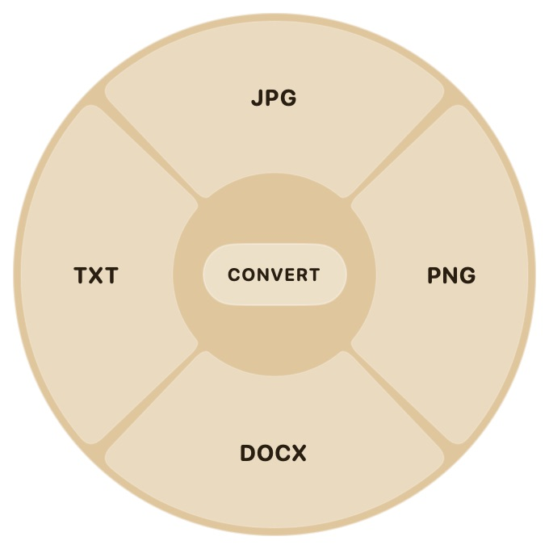
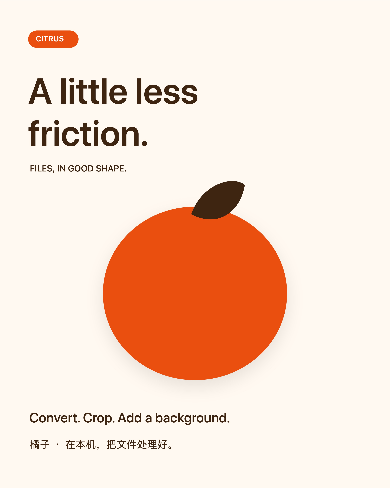
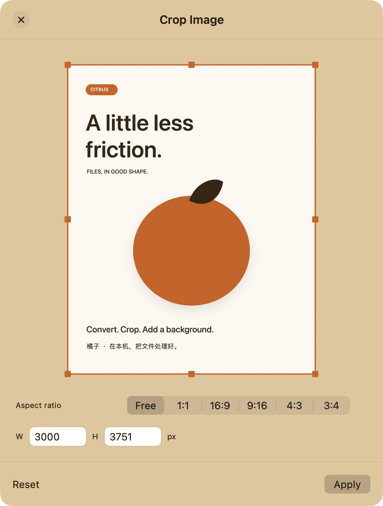
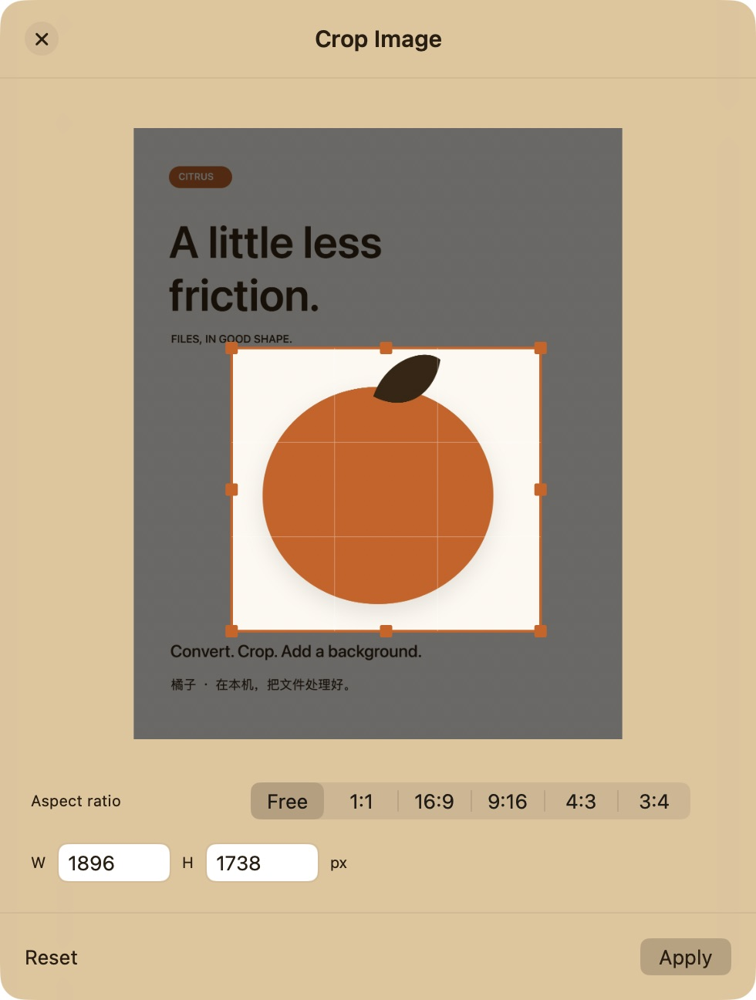
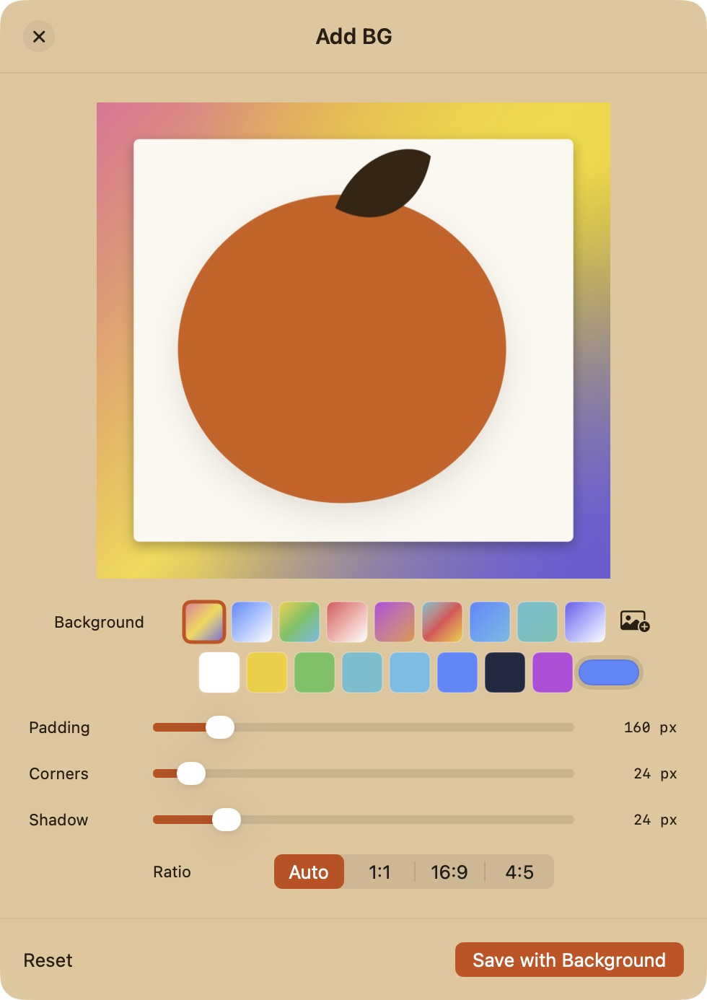
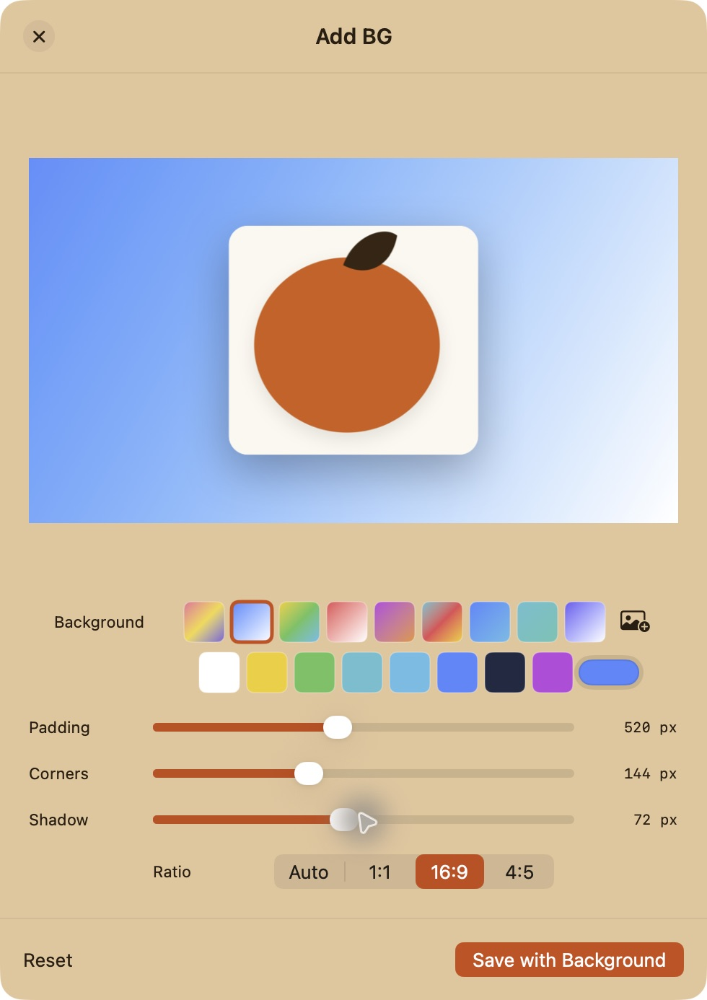

MAC 文件工具 · LOCAL FILE TOOLS
Citrus橘子
文件处理，顺手一点。
A little less friction.


转换 · 裁剪 · 添加背景Convert. Crop. Add a background.
01 / 03 · 转换格式
PDF → JPG
选择文件，点击目标格式。
Choose a file. Pick a format.
PDF
→
Citrus Demo.pdfJPGCitrus Demo.jpg
原文件保留，输出就在旁边。The original stays. The result lands beside it.
02 / 03 · 裁剪主体
留下画面的重点。
工具菜单 → Crop
Tools → Crop



拖动手柄，调整后点击 Apply。Drag the handles. Apply the crop.
03 / 03 · 添加背景
给图片一个好背景。
工具菜单 → Add BG
Tools → Add BG


背景、留白、圆角和阴影，一次调好。Background, padding, corners, and shadow.
CITRUS FOR MAC · 1.0.1 PREVIEW
在本机，
把文件处理好。
转换 · 裁剪 · 添加背景
Your files. A smoother workflow.
橘子 / Citrus for Macgithub.com/skynet518/citrus-mac
实际界面 · 光标动效重演 · 选择文件流程Actual UI · cursor motion recreated · file-picker workflow